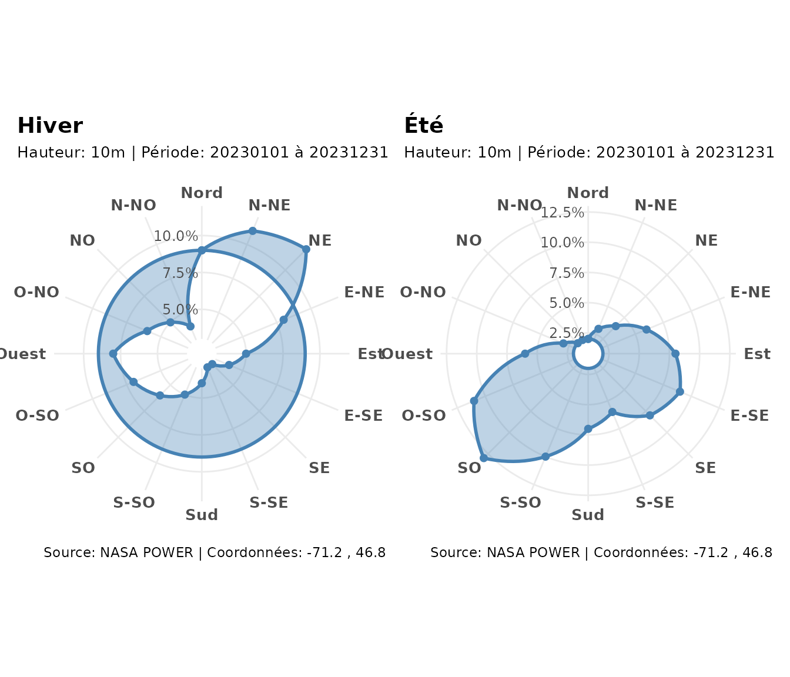
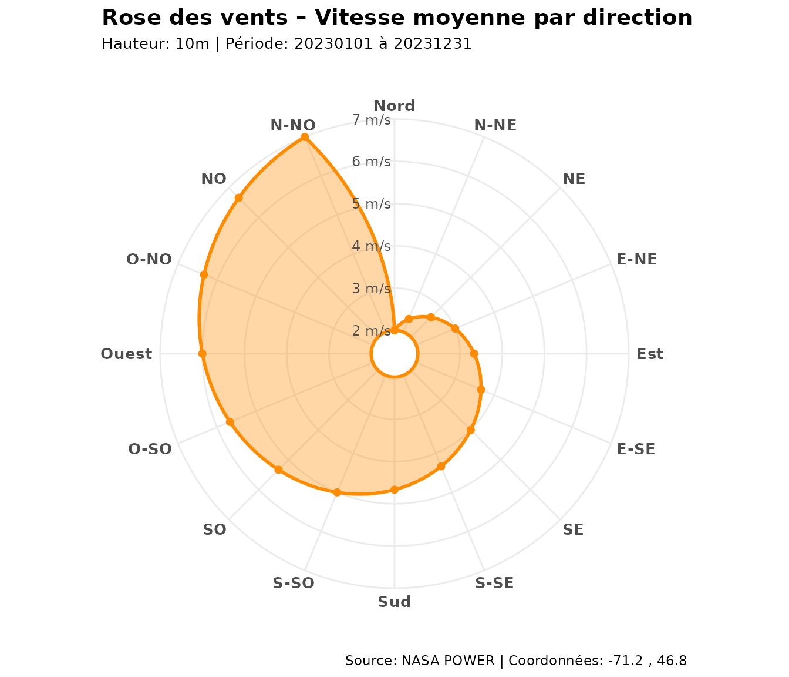

Données de vent
obtenir_rose_vents() interroge l’API NASA
POWER pour le centroïde d’un champ et renvoie la distribution
des directions et vitesses de vent.
champ <- sf::st_read("mon_champ.shp")
rose <- obtenir_rose_vents(champ, date_debut = "20230101", date_fin = "20231231")Pour que ce document soit reproductible sans connexion, on fabrique une rose des vents synthétique (mêmes champs que la sortie réelle).
creer_rose <- function(pct, avg, hauteur = "10m") {
pct <- pct / sum(pct) * 100
set.seed(1)
classes <- matrix(round(runif(16 * 10, 0, 4), 2), nrow = 16,
dimnames = list(NULL, paste0("CLASS_", 1:10)))
list(
directions = seq(0, 337.5, by = 22.5),
wd_pct = pct, wd_avg = avg,
classes = classes,
coordonnees = c(longitude = -71.2, latitude = 46.8),
hauteur = hauteur,
periode = c(debut = "20230101", fin = "20231231"),
data = list(messages = list(list(CLASSES = NULL)))
)
}
# Été : vents dominants de sud-ouest
rose_ete <- creer_rose(
pct = c(2, 3, 4, 6, 8, 9, 8, 6, 7, 10, 13, 11, 6, 3, 2, 2),
avg = seq(2, 7, length.out = 16)
)
# Hiver : vents dominants de nord-ouest
rose_hiver <- creer_rose(
pct = c(9, 11, 12, 8, 5, 4, 3, 3, 4, 5, 6, 7, 8, 6, 5, 4),
avg = seq(3, 9, length.out = 16)
)Direction dominante
obtenir_vent_dominant(rose_ete)
#> $angle
#> [1] 225
#>
#> $label
#> [1] "SO"
#>
#> $frequence_pct
#> [1] 13
#>
#> $vitesse_moyenne
#> [1] 5.333333
obtenir_vent_dominant(rose_hiver)
#> $angle
#> [1] 45
#>
#> $label
#> [1] "NE"
#>
#> $frequence_pct
#> [1] 12
#>
#> $vitesse_moyenne
#> [1] 3.8Comparaison saisonnière
library(patchwork)
tracer_rose_vents(rose_hiver, type = "pct") +
ggplot2::labs(title = "Hiver") +
tracer_rose_vents(rose_ete, type = "pct") +
ggplot2::labs(title = "Été")
Personnaliser une rose
Les objets renvoyés sont des ggplot2, donc entièrement
modifiables :
tracer_rose_vents(rose_ete, type = "avg", palette = "darkorange") +
ggplot2::theme(legend.position = "none")
Application : orienter une haie
La direction dominante guide l’implantation des haies : on place la haie perpendiculaire au vent dominant.
dom <- obtenir_vent_dominant(rose_ete)
perp <- (dom$angle + 90) %% 180
data.frame(vent_dominant_deg = dom$angle,
haie_perpendiculaire_deg = perp,
frequence_pct = round(dom$frequence_pct, 1),
vitesse_moy_ms = round(dom$vitesse_moyenne, 2))
#> vent_dominant_deg haie_perpendiculaire_deg frequence_pct vitesse_moy_ms
#> 1 225 135 13 5.33À retenir
| Fonction | Sortie |
|---|---|
obtenir_rose_vents() |
Données NASA POWER (16 directions, classes) |
obtenir_vent_dominant() |
Direction la plus fréquente |
tracer_rose_vents() |
Rose fréquence / vitesse |
tracer_rose_vents_stacked() |
Rose empilée par classes de vitesse |
Source des données : NASA POWER.